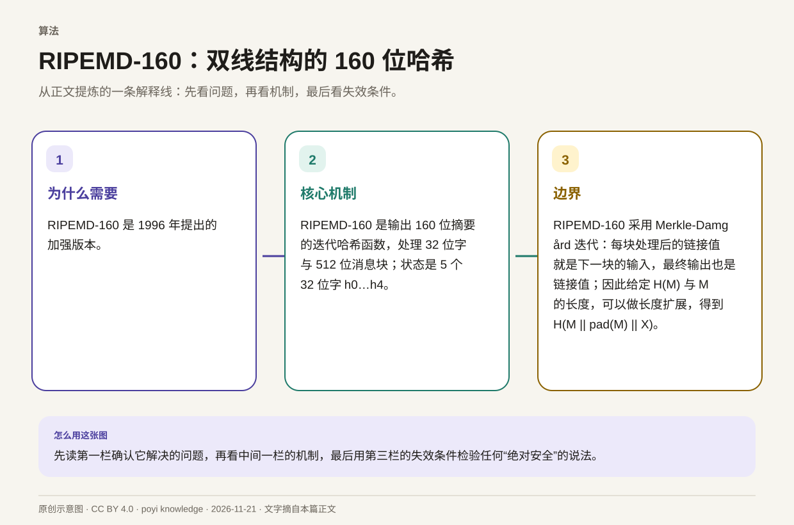
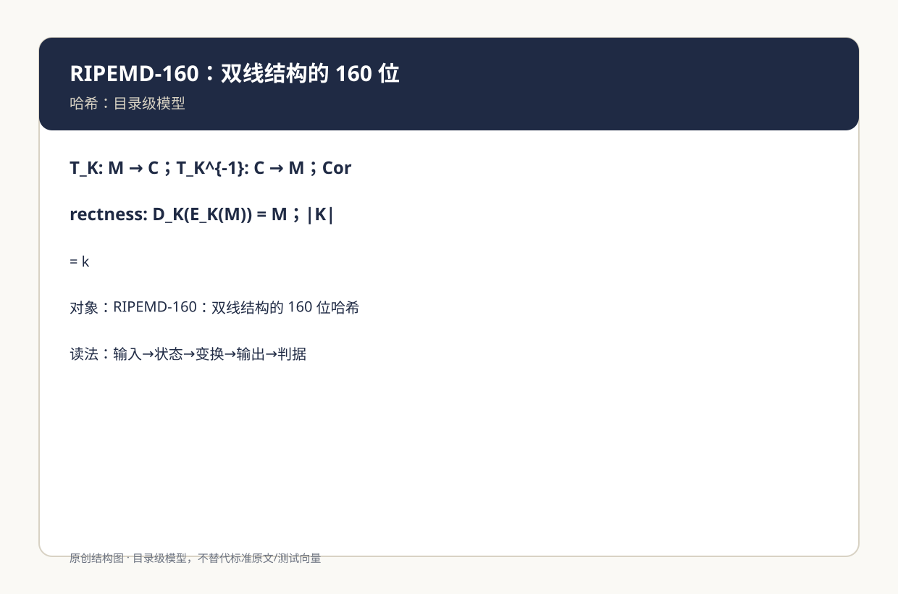

原理与机制
算法：RIPEMD-160 散列（RIPEMD-160）。RIPEMD-160 是输出 160 位摘要的迭代哈希函数，处理 32 位字与 512 位消息块；状态是 5 个 32 位字 h0…h4。初始值是 h0=67452301、h1=efcdab89、h2=98badcfe、h3=10325476、h4=c3d2e1f0。填充与 MD4 相同：先追加 0x80，再补 0 位到长度对 512 同余于 448，最后追加 64 位小端消息长度。以 "abc" 为例，填充块是 61 62 63 80 后跟 52 个 00，再跟 8 字节长度 18 00 00 00 00 00 00 00；按小端读成 X[0]=0x80636261、X[14]=0x00000018、X[15]=0。每个消息块要经过两条并行的 80 步线路；每条线路分成五个 16 步的轮次，使用不同的布尔函数与常量。五轮依次使用：
- f1 = x xor y xor z
- f2 = (x and y) or (not x and z)
- f3 = (x or not y) xor z
- f4 = (x and z) or (y and not z)
- f5 = x xor (y or not z)
左线五轮常量是 00000000、5a827999、6ed9eba1、8f1bbcdc、a953fd4e；右线是 50a28be6、5c4dd124、6d703ef3、7a6d76e9、00000000。两条线路使用不同的消息字顺序 r、r' 和不同的循环左移量 s、s'；这正是 RIPEMD-160 与单线 MD4/SHA-1 结构的主要区别。每一步计算 T = ROTL(A + f(B,C,D) + X[r(j)] + K(j), s(j)) + E，然后 A←E、E←D、D←ROTL10(C)、C←B、B←T；右线用 f(79−j)、r'、s'、K' 同步执行。每条线路的寄存器更新都包含 D←ROTL10(C)：C 循环左移 10 位后成为新的 D。80 步后，两条线路的寄存器与输入链接值交叉相加：h0←h1+C+D'、h1←h2+D+E'、h2←h3+E+A'、h3←h4+A+B'、h4←h0+B+C'。最终摘要是 h0…h4 的 160 位小端字节串。

为什么重要
RIPEMD 是在欧盟 RIPE（RACE Integrity Primitives Evaluation）项目中开发的；RIPEMD-160 是 1996 年提出的加强版本。论文同时提出 160 位的 RIPEMD-160 和作为 RIPEMD 替代的 128 位 RIPEMD-128；160 位版本的设计目标是把 RIPEMD 已积累的信任转移到新算法上。两条线路使用相同的五个函数但顺序相反（右线用 f(79−j)），并使用不同的常量、消息顺序和旋转量；攻击者要同时控制两条线才能构造碰撞，这提高了差分攻击的难度。设计目标是让两条线路尽可能不同，而不是让它们各自独立运行。160 位摘要的理想碰撞复杂度约为 2^80，原像/第二原像约为 2^160；论文把 160 位结果作为对原 128 位 RIPEMD 的安全加强。论文的 Pentium 90 MHz 实测显示 RIPEMD-160 比 SHA-1 约慢 15%，约为 RIPEMD 的一半速度、MD4 的四分之一速度；增强安全性以约两倍性能为代价。论文的设计目标是提高安全余量，但没有给出数学安全性证明；作者在结论中邀请同行对 RIPEMD-160 进行进一步的安全分析。
应用与实例
论文列出的用途包括数字指纹、消息认证、密钥派生和口令保护；这些用途依赖哈希的原像、第二原像或碰撞抗性。消息认证（MAC）是其中一项用途，但哈希本身不是 MAC，MAC 还需要密钥化构造；密钥派生与口令保护则分别依赖哈希的输出不可预测性和原像抗性。RIPEMD-160 是 160 位哈希；论文把它定位为 RIPEMD 的加强版，并同时给出 128 位 RIPEMD-128 作为原 RIPEMD 的替代。具体协议是否采用要看协议自己的规范。

边界与攻击面
RIPEMD-160 采用 Merkle-Damgård 迭代：每块处理后的链接值就是下一块的输入，最终输出也是链接值；因此给定 H(M) 与 M 的长度，可以做长度扩展，得到 H(M || pad(M) || X)，这不是碰撞。本批次演示：已知 RIPEMD-160(abc) 的结果与 64 字节填充长度，不知道原消息也能计算 RIPEMD-160(abc || pad || extra) = 1f35150185a2c3cfc80d435934579261c99da3e0。160 位摘要的生日碰撞界约为 2^80；这一数字是通用攻击的上界，不代表对 RIPEMD-160 的具体密码分析结果。2004 年 Wang、Feng、Lai、Yu 的 ePrint 2004/199 标题列出 MD4、MD5、HAVAL-128 与 RIPEMD；标题只写 RIPEMD，没有写 RIPEMD-160。两者不是同一算法，不能把原始 RIPEMD 的结果直接套到 RIPEMD-160 上。双线结构也带来性能代价：RIPEMD-160 比 SHA-1 约慢 15%，约为 RIPEMD 的一半速度；如果应用原本使用 RIPEMD 并需要 128 位摘要，RIPEMD-128 是论文给出的 128 位替代。选择算法时应按协议要求、输出长度和安全余量权衡。
历史与背景
- 1996 年之前：RIPEMD 在欧盟 RIPE 项目中开发，作为 MD4 风格的哈希函数。- 1996 年：Dobbertin、Bosselaers 与 Preneel 在 FSE 1996（LNCS 1039，pp.71-82）发表 RIPEMD-160 与 RIPEMD-128。- 2004 年：Wang、Feng、Lai、Yu 的 ePrint 2004/199 标题列出 MD4、MD5、HAVAL-128 与 RIPEMD；标题只写 RIPEMD，没有写 RIPEMD-160。
逐步示例与核验
复算示例
取标准或公开测试向量中的一组参数，按“输入—执行—输出”记录：先写出该条目的形式式 (h=H(M),\quad H:{0,1}^{*}\to{0,1}^{n})；再按规范顺序执行每一步，最后把输出与独立实现或标准向量逐字节对照。若没有可引用的数值向量，就只记录结构步骤，不伪造输出。
参考出处
- Wikipedia search entry for RIPEMD-160 散列. https://zh.wikipedia.org/w/index.php?search=RIPEMD-160%20%E6%95%A3%E5%88%97
- Handbook of Applied Cryptography (Menezes, van Oorschot, Vanstone). https://www.cacr.math.uwaterloo.ca/hac/